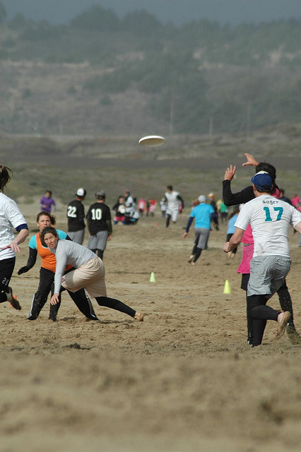

2026
ᠮᠣᠩᠭᠣᠯ ᠪᠢᠴᠢᠭ
ᠪᠤᠴᠠᠬᠤ
ᠠᠪᠳᠠᠷᠠ ᠵᠢᠨ ᠳᠣᠲᠣᠷᠠ ᠪᠡᠨ ᠰᠤᠳᠤᠷ ᠮᠢᠨᠢ ᠪᠠᠭᠲᠠᠳᠠᠭ ᠠᠲᠠᠨ ᠤ ᠬᠢ ᠪᠡᠨ ᠨᠢᠷᠤᠭᠤᠨ ᠳᠡᠭᠡᠷᠡ ᠭᠡᠷ ᠮᠢᠨᠢ ᠪᠠᠭᠲᠠᠳᠠᠭ ᠦᠷᠭᠦᠭᠡ ᠵᠢᠨ ᠲᠣᠭᠣᠨᠣ ᠪᠡᠷ ᠮᠢᠨᠢ ᠨᠠᠷᠠᠨ ᠪᠠᠭᠲᠠᠳᠠᠭ ᠦᠩᠭᠦᠯᠴᠡᠭ ᠦᠨ ᠳᠣᠲᠣᠷᠠ ᠮᠢᠨᠢ ᠤᠷᠴᠢᠯᠠᠩ ᠪᠠᠭᠲᠠᠳᠠᠭ ᠡ
ᠦ ᠰᠡᠢᠯᠦᠮᠡᠯ ᠢ ᠰᠤᠷᠤᠭᠠᠳ ᠬᠤᠶᠠᠭᠤᠯᠠ ᠶᠢ ᠨᠡᠢᠯᠡᠭᠦᠯᠦᠨ ᠨᠢᠭᠡᠳᠬᠡᠵᠦ ᠨᠡᠪᠲᠡᠷᠡᠲᠡᠯᠡ ᠣᠢᠯᠠᠭᠠᠭᠰᠠᠨ ᠪᠣᠯᠬᠣᠷ ᠪᠢᠴᠢᠬᠦ᠌ ᠠᠷᠭᠠ ᠪᠠᠷᠢᠯ ᠨᠢ ᠳᠦᠷᠪᠡᠯᠵᠢᠨ ᠲᠦᠭᠦᠷᠢᠭ ᠢ ᠬᠠᠮᠲᠤ ᠳᠤ ᠨᠢ ᠬᠠᠷᠠᠭᠠᠯᠵᠠᠵᠤ᠂ ᠪᠦᠲᠦᠴᠡ
ᠪᠠᠨ ᠳᠠᠭᠠᠭᠰᠠᠨ ᠲᠠᠪᠢᠯᠠᠩ ᠭᠡᠵᠦ ᠪᠠᠢᠬᠤ ᠠᠴᠠ ᠵᠠᠢ ᠦᠭᠡᠢ ᠲᠤᠳᠤᠨᠤᠬᠠᠨ ᠰᠡᠳᠬᠢᠯ ᠳᠦ ᠬᠠᠭᠠᠴᠠᠯ ᠭᠡᠵᠦ ᠪᠠᠢᠳᠠᠭ ᠦᠭᠡᠢ ᠮᠢᠩᠭᠠᠨ ᠵᠢᠯ ᠦᠩᠭᠡᠷᠡᠪᠡᠴᠦ ᠰᠢᠨᠡᠬᠡᠨ ᠪᠠᠢᠬᠤ ᠦᠭᠡ ᠶᠢ ᠮᠠᠭᠠᠳ ᠣᠳᠣ ᠯᠠ ᠬᠡᠯᠡᠶᠡ ᠴᠢᠮᠠ
ᠵᠠᠪ ᠦᠭᠡᠢ ᠡᠷᠭᠢᠯᠳᠦᠨᠡ᠃ ᠪᠥᠷᠲᠥᠯᠵᠡᠨ ᠬᠠᠷᠠᠭᠳᠠᠭᠴᠢᠢ ᠪᠠᠷᠠ ᠨᠢᠭᠡ ᠦᠶᠡ ᠳᠠᠯᠳᠠ ᠣᠷᠣᠵᠤ ᠨᠢᠭᠡ ᠦᠶᠡ ᠢᠯᠡ ᠭᠠᠷᠤᠨᠠ᠃ ᠤᠳᠠᠯ ᠦᠭᠡᠢ ᠠᠯᠲᠠᠨ ᠭᠠᠨᠵᠢᠷᠠ ᠨᠤᠭᠤᠳ ᠪᠥᠷᠲᠥᠯᠵᠡᠨ ᠴᠣᠬᠣᠢᠵᠤ ᠥᠷᠯᠥᠭᠡᠨ ᠦ ᠨᠠᠷᠠᠨ
ᠬᠣᠭᠣᠰᠢᠯᠠᠵᠤ ᠰᠠᠭᠤᠬᠤ ᠬᠦᠮᠦᠨ ᠦᠭᠡᠢ ᠪᠠᠢᠭᠰᠠᠭᠠᠷ ᠬᠠᠮᠬᠤᠳ ᠬᠠᠯᠬᠠᠭ ᠤᠯᠠᠮ ᠢᠶᠠᠨ ᠳᠦᠭᠦᠷᠡᠳᠬᠦᠢ᠂ ᠢᠮᠤ ᠶᠢᠨ ᠲᠤᠯᠠ᠂ ᠡᠳᠦᠷ ᠨᠠᠷᠠᠨ ᠳ᠋ᠤᠷ ᠴᠤ᠂ ᠮᠦᠨ ᠠᠶᠤᠯ ᠦᠭᠡᠢ ᠤᠷᠤᠬᠤ ᠬᠦᠮᠦᠨ ᠦᠭᠡᠢ ᠂ ᠰᠠᠷᠠᠨ ᠤᠴᠢᠷᠠ

4. ᠮᠣᠩᠭᠣᠯ ᠬᠡᠯᠡᠨ
ᠶᠠᠮᠠᠷ ᠴᠤ ᠨᠣᠮ᠂ ᠤᠯᠠᠨ ᠬᠡᠯᠡ ᠰᠣᠷᠣᠯᠠ ᠭᠡᠳ ᠢᠷᠠᠭᠤ ᠰᠠᠢᠬᠠᠨ ᠮᠤᠩᠭᠤᠯ ᠬᠡᠯᠡ ᠪᠡᠨ ᠮᠠᠷᠲᠠᠵᠤ ᠪᠣᠯᠬᠤ ᠦᠭᠡᠢ ᠡᠨᠡ ᠯᠠ ᠬᠡᠯᠡ ᠪᠡᠷ ᠠᠪᠤ ᠴᠢᠨᠢ
ᠪᠡᠨ ᠯᠠ ᠪᠢ ᠡᠨᠡ ᠬᠡᠦᠬᠡᠨ ᠳᠦ ᠥᠴᠦᠬᠡᠨ ᠮᠠᠭᠤ 《 ᠪᠤᠷᠤ ᠪᠠᠨᠳᠢ》 ᠪᠣᠯᠵᠤ ᠴᠤ ᠲᠠᠭᠠᠷᠠᠯᠠ ᠯᠠ ᠳ᠋ᠠ᠃ ᠬᠡᠦᠬᠡᠨ ᠨᠦᠭᠦᠳ ᠲᠦ ᠤᠤᠯ ᠠᠴᠠ ᠪᠠᠨ ᠬᠠᠷᠠᠴᠤᠳ
ᠢᠲᠡᠵᠡᠭᠡᠵᠦ᠂ ᠳᠠᠷᠠᠭᠠ ᠨᠢ ᠠᠭᠠᠷᠴᠠ ᠪᠤᠴᠠᠯᠭᠠᠵᠤ ᠤᠤᠭᠤᠪᠠ᠃ ᠬᠡᠦᠬᠡᠨ ᠮᠢᠬᠠᠨ ᠠᠴᠠ ᠱᠠᠯᠢᠲᠠᠢ ① ᠢᠳᠡᠵᠦ ᠴᠢᠳᠠᠭᠰᠠᠨ ᠦᠭᠡᠢ᠂ ᠬᠠᠷᠢᠨ ᠠᠭᠠᠷᠴᠠ
ᠪᠡᠨ ᠨᠢᠷᠤᠭᠤᠨ ᠳᠡᠭᠡᠷᠡ ᠭᠡᠷ ᠮᠢᠨᠢ ᠪᠠᠭᠲᠠᠳᠠᠭ ᠦᠷᠭᠦᠭᠡ ᠵᠢᠨ ᠲᠣᠭᠣᠨᠣ ᠪᠡᠷ ᠮᠢᠨᠢ ᠨᠠᠷᠠᠨ ᠪᠠᠭᠲᠠᠳᠠᠭ ᠦᠩᠭᠦᠯᠴᠡᠭ ᠦᠨ ᠳᠣᠲᠣᠷᠠ ᠮᠢᠨᠢ ᠤᠷᠴᠢᠯᠠᠩ
ᠴᠤᠤᠳᠠᠯ ᠤᠨ ᠬᠤᠯᠠᠨ ᠵᠦᠯᠭᠡᠨ ᠳᠡᠭᠡᠷᠡ ᠭᠡᠷ ᠢᠶᠡᠨ ᠪᠠᠷᠢᠭᠠᠳ ᠵᠦᠭᠡᠷ ᠯᠠ ᠨᠢᠭᠡ ᠠᠮᠢᠳᠤᠷᠠᠬᠤ ᠶᠤᠮᠰᠠᠨ ᠵᠡᠭᠦᠦ ᠤᠲᠠᠰᠤ ᠨᠡᠢᠯᠡᠭᠦᠯᠦᠨ ᠬᠦᠦ ᠳ᠋ᠡᠭᠡᠨ
ᠲᠠᠯᠪᠠᠶᠤᠬᠤᠢ
ᠥᠨᠳᠥᠷ ᠥᠷᠲᠡᠭᠲᠦ ᠰᠡᠭᠦᠳᠡᠷᠯᠡᠬᠦ ᠲᠥᠬᠥᠭᠡᠷᠦᠮᠵᠢ᠂ ᠳᠡᠭᠡᠳᠦ ᠲᠦᠪᠰᠢᠨ ᠦ ᠦᠵᠡᠭᠳᠡᠯᠲᠦ ᠬᠡᠯᠡ ᠪᠡᠷ ᠠᠮᠲᠠᠲᠤ ᠢᠳᠡᠭᠡᠨ ᠦ ᠰᠣᠨᠢᠨ ᠦᠵᠡᠭᠳᠡᠯ ᠢ ᠡᠭᠦᠰᠭᠡᠬᠦ ᠡᠰᠡᠬᠦᠯᠡ
ᠪᠦᠷᠬᠦᠭᠦᠯ ᠪᠣᠰᠭᠠᠭᠤᠯᠳᠠᠭ 》ᠭᠡᠳᠡᠭ ᠦᠭᠦᠯᠡᠪᠦᠷᠢ ᠪᠦᠲᠦᠴᠡ ᠪᠡᠷ ᠄ 1 ᠨᠡᠢᠯᠡᠮᠡᠯ ᠦᠭᠦᠯᠡᠪᠦᠷᠢ 2 ᠡᠩ ᠦᠭᠦᠯᠡᠪᠦᠷᠢ 3 ᠳᠡᠯᠭᠡᠷᠡᠩᠭᠦᠢ ᠦᠭᠦᠯᠡᠪᠦᠷᠢ 4 ᠭᠠᠭᠴᠠ
ᠨᠢᠭᠡ ᠴᠡᠪᠡᠷ ᠠᠰᠠᠭᠤᠬᠤ ᠥᠭᠦᠯᠡᠪᠦᠷᠢ ᠶᠠᠮᠠᠷ ᠨᠢᠭᠡᠨ ᠬᠡᠷᠡᠭ ᠪᠣᠳᠠᠰ ᠤᠨ ᠲᠤᠬᠠᠢ ᠬᠠᠷᠢᠭᠤ ᠮᠡᠳᠡᠭᠡᠯᠡᠯ ᠣᠯᠬᠤ ᠵᠣᠷᠢᠯᠭᠠ ᠲᠠᠢ ᠪᠠᠷ ᠬᠡᠯᠡᠭ᠍ᠰᠡᠨ ᠥᠭᠦᠯᠡᠪᠦᠷᠢ ᠶᠢ ᠠᠰᠠᠭᠤᠬᠤ ᠥᠭᠦᠯᠡᠪᠦᠷᠢ ᠭᠡᠨᠡ᠃
ᠰᠦ ᠦᠵᠡᠰᠭᠦᠯᠡᠩᠲᠦ ᠴᠠᠭᠠᠨ ᠬᠠᠴᠠᠷ ᠢᠶᠠᠨ ᠤᠨᠠᠬᠤ ᠨᠠᠷᠠᠨ ᠲᠠᠢ ᠲᠠᠭᠠᠷᠠᠭᠤᠯᠤᠨᠠ᠃ 2 ᠠᠩᠴᠢᠨ ᠬᠦᠷᠦᠭᠡᠴᠢᠨ ᠦ ᠭᠠᠨᠵᠤᠭᠠ ᠲᠣᠪᠣ ᠲᠣᠪᠣ ᠤᠯᠠᠭᠠᠨ ᠠᠪᠠ ᠶᠢᠨ
01